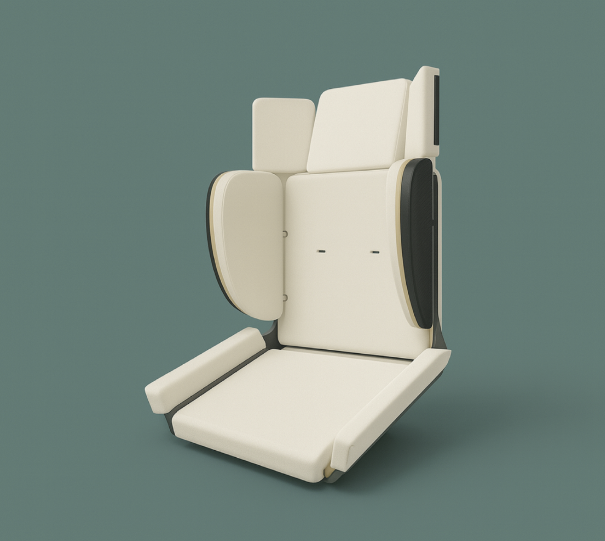
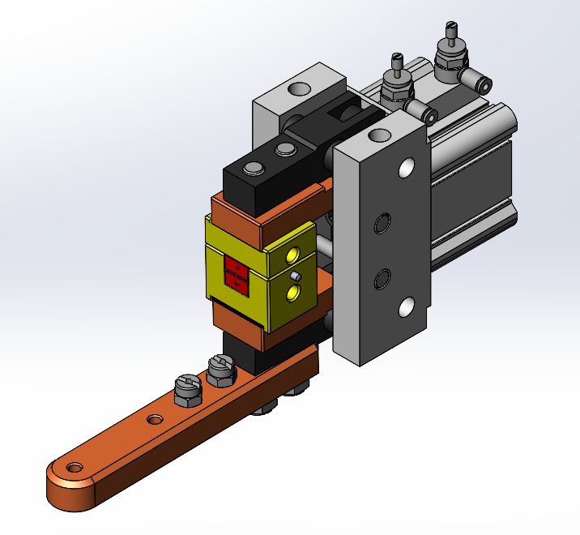

Projects
← Back
Wind Tunnel Blade Optimization
MATLAB-based turbine blade design validated through wind tunnel testing.
MATLAB
LabVIEW
Fluid Mechanics
Autodesk Fusion 360
3D Printing
2025

EverSeat Modular System
A single child seat system replacing multiple stages.
Autodesk Fusion 360
ANSYS FEA
DFMEA
QFD
Prototyping
2025

Bicycle Frame Analysis
Optimizing stiffness and performance through simulation.
Autodesk Fusion 360
ANSYS
FEA
CFD
Structural Analysis
2025

Bike Trainer Dissection
Analyzing the fluid dynamics of an impeller-based resistance system.
Fluid Mechanics
Engineering Analysis
2024

Production Tooling for Stator Coil Bonding
Designed a pneumatic fixture to pierce insulation and activate bond coat through electrical conduction, improving repeatability in production.
SolidWorks
Manufacturing
Production Tooling
Testing and Validation
2025